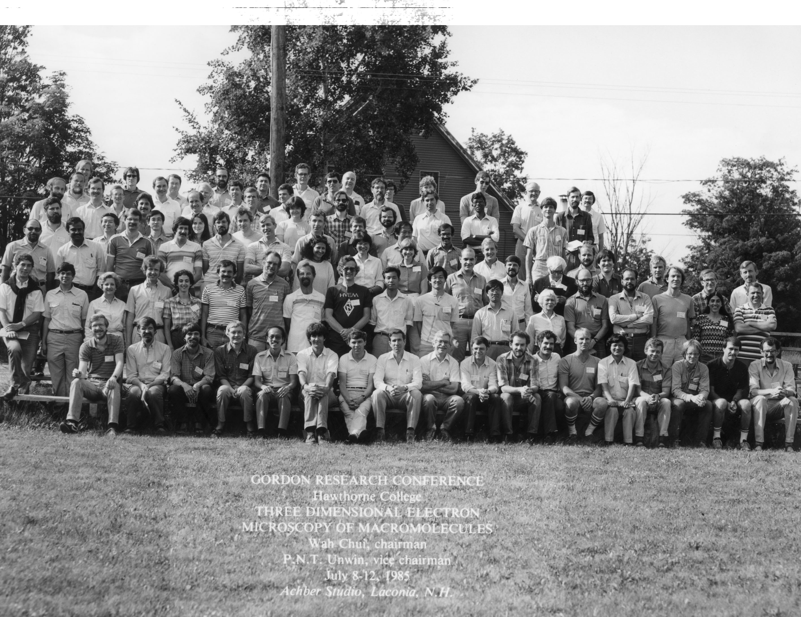
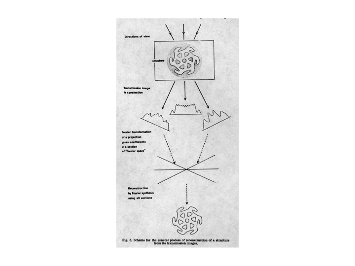
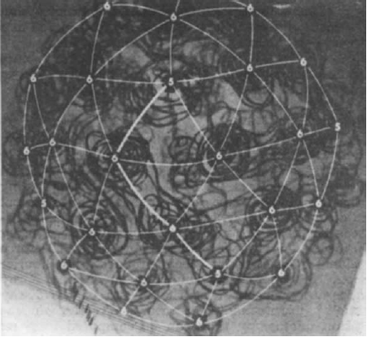
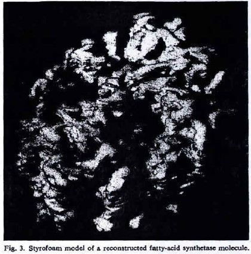
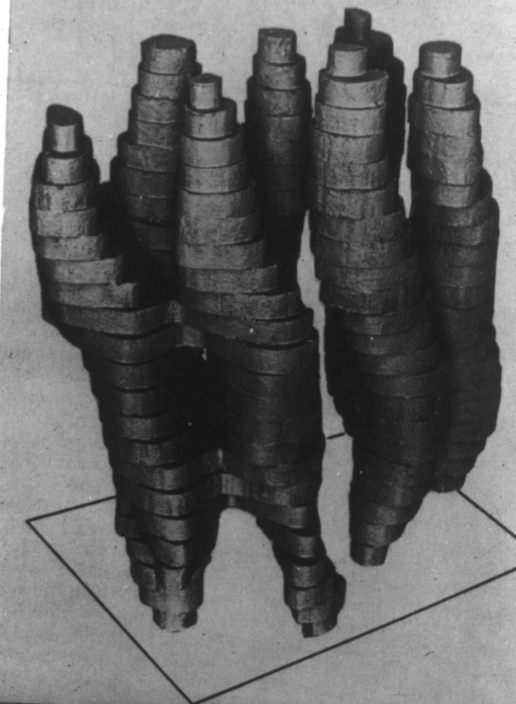

|  | ||
| Group photograph taken at the first Gordon Research Conference for 3D EM, 1985, Hawthorne College, New Hampshire |
| David DeRosier | 3D reconstruction from electron micrographs a personal account of its development | Methods Enzymol. 2010;481:1-24 |
| Ken Taylor, Bob Glaeser | Retrospective on the early development of cryoelectron microscopy of macromolecules and a prospective on opportunities for the future | J Struct Biol. 1999 Dec 1;128(1):3-14 |
| Bob Glaeser | Review: Electron Crystallography: Present Excitement, a Nod to the Past, Anticipating the Future | J Struct Biol. 2008 Sep;163(3):214-23 |
| Obituary: Walter Hoppe | J. Appl. Cryst. (1987) 20, 324-325 | |
| Bruno Strasser, Jacques Dubochet | Obituary: Eduard Kellenberger (1920-2004) | Nature. 2005 Feb 24;433(7028):817 |
| Marin van Heel | Jean-Pierre Bretaudière (1946-2008) and the early days of multivariate statistics in electron microscopy | In: "An electronic text book: Electron microscopy in Life Science", 3D-EM Network of Excellence, Editors: A. Verkley and E. Orlova (2009) |
| R. Nuzzo | Profile of Chikashi Toyoshima | Proc Natl Acad Sci U S A. 2006 Jan 31;103(5):1165-7 |
| Aaron Klug | Aaron Klug - Autobiography | Nobelprize.org. 17 Jul 2011 |
| Don Caspar, David DeRosier | The 1982 Nobel Prize in chemistry | Science. 1982 Nov 12;218(4573):653-5 |
| John Finch | A Nobel Fellow on Every Floor | Book published by MRC/LMB |
| Anthony Crowther | From Envelopes to Atoms: The Remarkable Progress of Biological Electron Microscopy | Adv Protein Chem Struct Biol. 2010;81:1-32. |
| Anthony Crowther | Viruses and the development of quantitative biological electron microscopy | Notes Rec R Soc Lond. 2004 Jan;58(1):65-81. |
| Nikolai Andreevich Kiselev (On the Occasion of His 80th Birthday) | Kristallografiya, 2008, Vol. 53, No. 6, pp. 1149–1150. translated in Crystallography Reports, 2008, Vol. 53, No. 6, pp. 1091–1092 | |
| Wolfgang Baumeister | A voyage to the inner space of cells | Protein Sci. 2005 January; 14(1): 257–269. |
| Arthur L Robinson | Electron Microscopy: Imaging Molecules in Three Dimensions | Science 1976 April; Vol. 192 no. 4237 pp. 360-400 |
| Jacques Dubochet | Cryo-EM—the first thirty years | Journal of Microscopy 2011; Vol. 245 no. 3 pp. 1-4 |
| Yoshi Fujiyoshi | A profile of a researcher in the field of electron crystallography | October 2011 |
| Michael Rossmann | A short scientific autobiography of Michael G. Rossmann | September 2011 |
|  |  |  |  |
| DeRosier & Klug (1968) "Reconstruction of three dimensional structures from electron micrographs" |
Crowther et al. (1970) "Three dimensional reconstructions of spherical viruses by fourier synthesis from electron micrographs" |
Hoppe (1974) "Three-dimensional reconstruction of individual negatively stained yeast fatty-acid synthetase molecules from tilt series in the electron microscope" |
Henderson & Unwin (1975) "Three-dimensional model of purple membrane obtained by electron microscopy" |
{kind=link}